파랑은 검지, 초록은 중지, 노랑은 약지, 빨강은 엄지다. 주황색 반투명 원통은 윗단을 90도 돌릴 때 필요한 공간을 표시한 것이다.
실제 로봇 영상이 아닌 저장된 시뮬레이션 상태다. 이 모델의 기존 회전은 약61도로, 실물 영상에서 관찰한 약90도와 차이가 있다. 새 파지의 실물 재현과 실제 다른 손의 회전 하중은 아직 확인하지 않았다. 주황색 표시는 충돌 형상을 바꾸지 않는다.
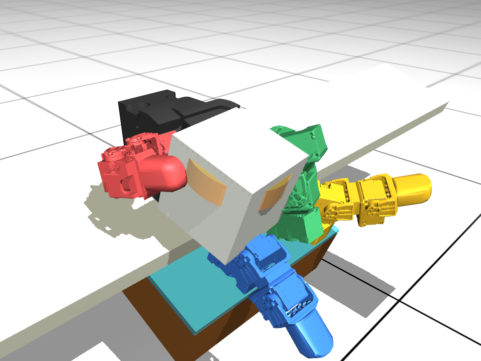
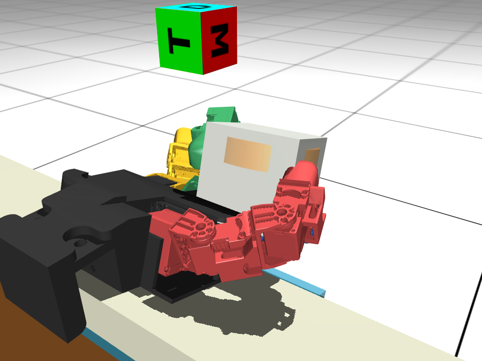
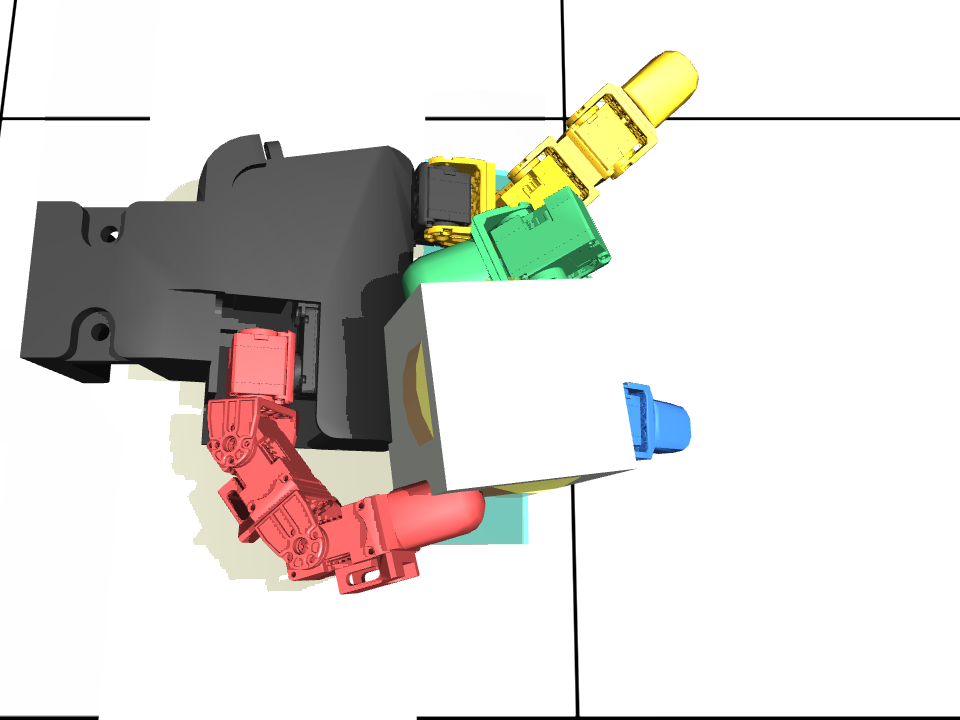
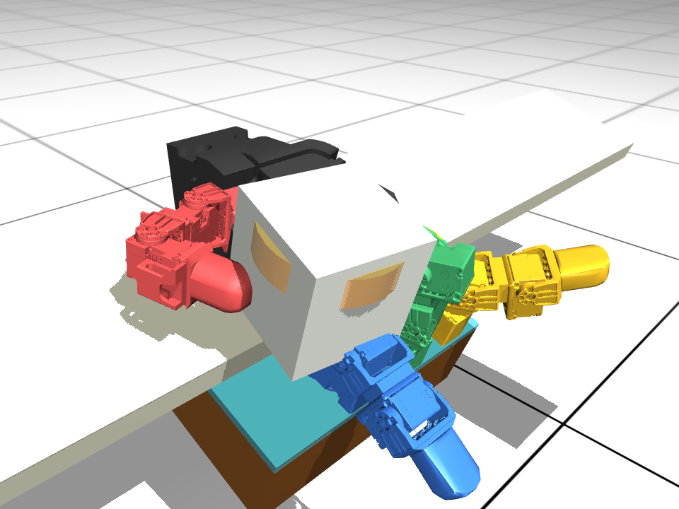
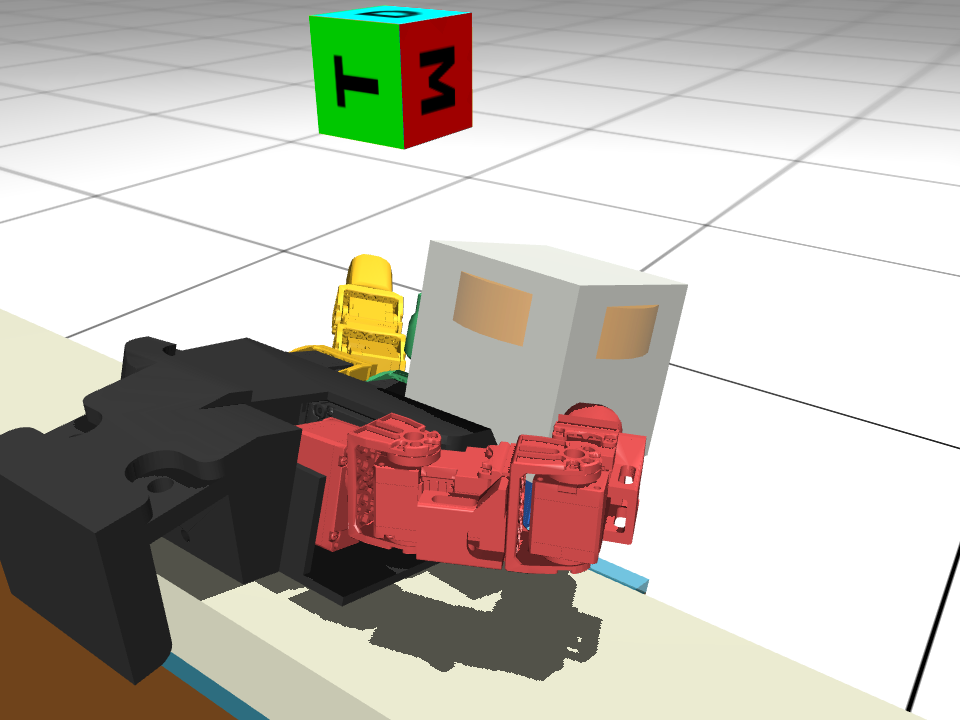
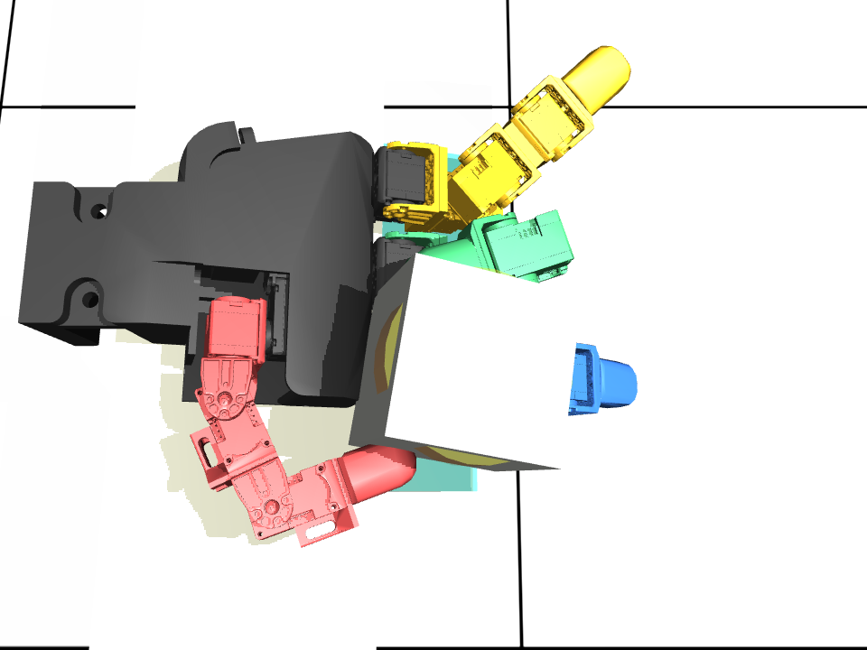
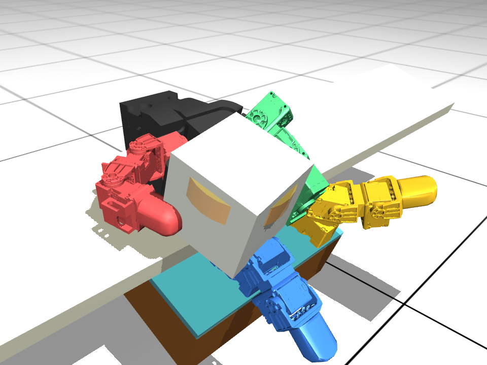
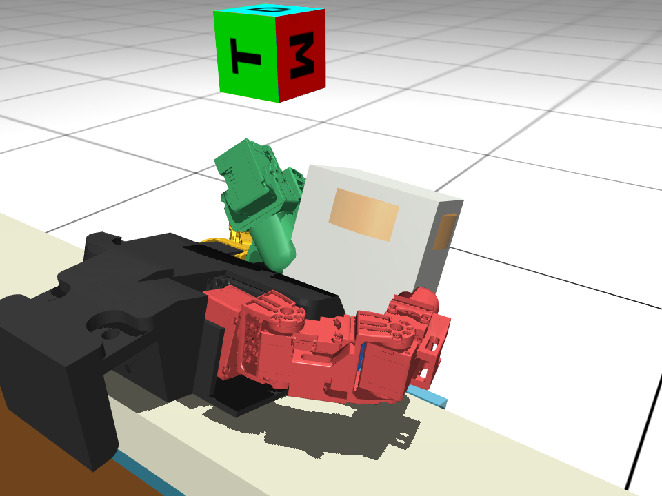
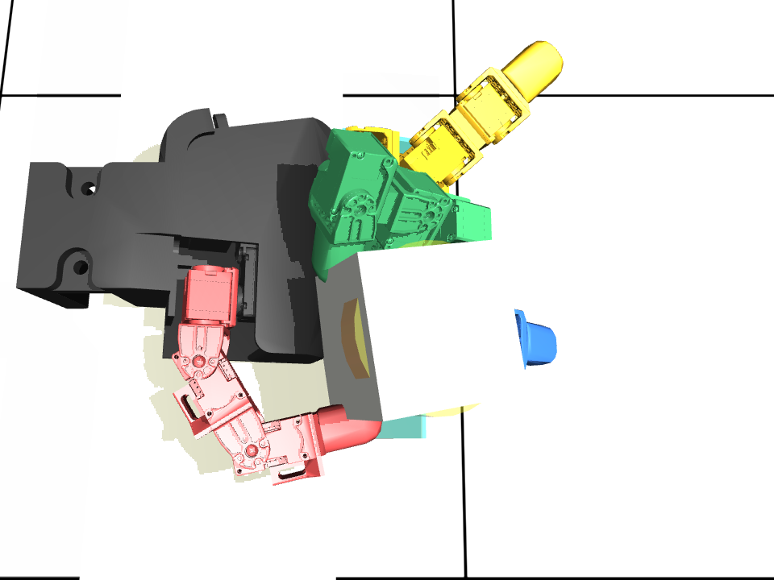
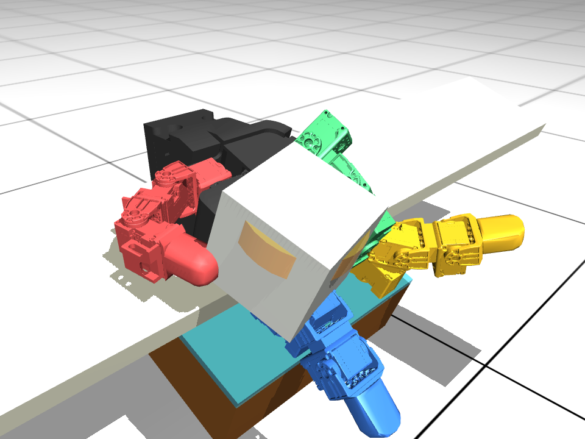
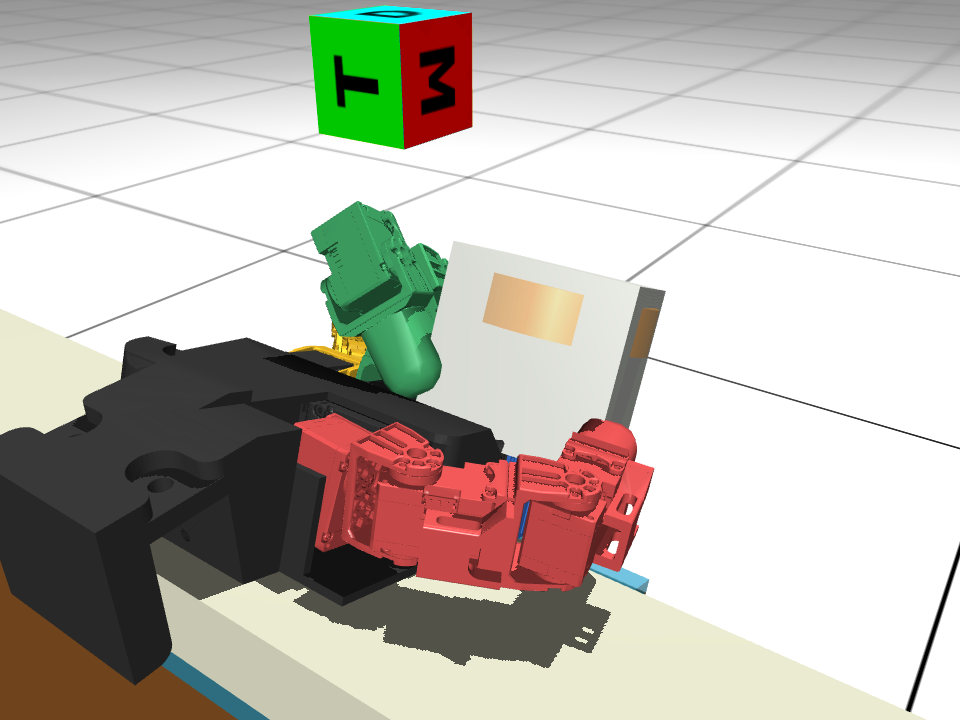
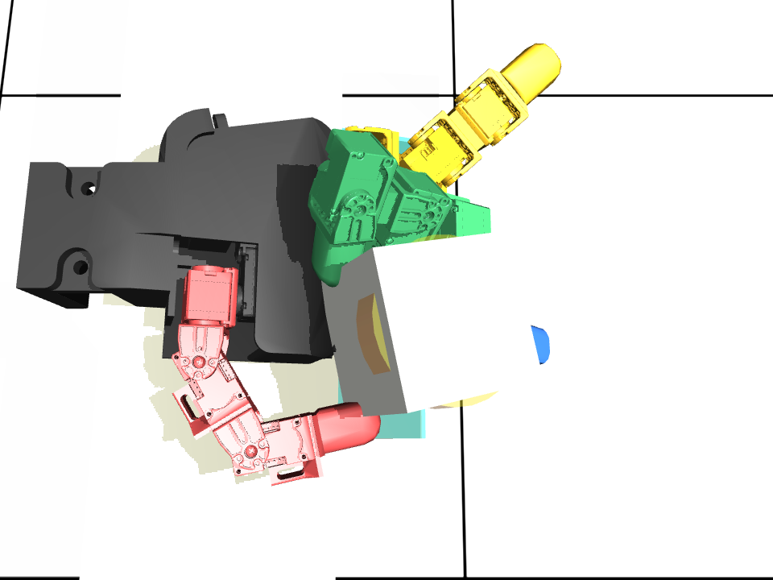